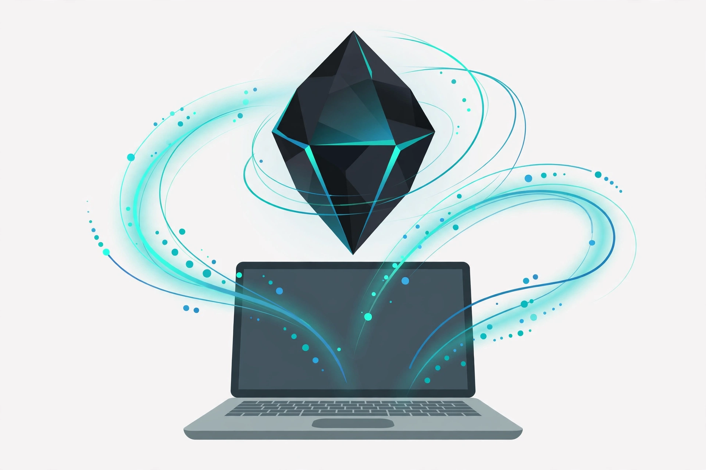

2026년 11월 13일

구글이 자사 최강 AI 모델 '제미나이 4 카본'을 11월 10일 일반에 공개했습니다. 지난달 28일 처음 공개됐을 때는 일부 사이버보안 전문가만 쓸 수 있었는데, 이제 유료 개발자와 기업, 최상위 요금제 구독자까지 쓸 수 있게 됐습니다.
카본이 노리는 일은 '오래 걸리는 어려운 일'입니다. 코딩 같은 소프트웨어 개발, 사이버보안, 고난도 과학 추론처럼 몇 시간, 길게는 며칠씩 이어지는 작업에 맞췄습니다. 구글은 코딩 벤치마크 '커서벤치 4.0'과 자동화 벤치마크 등에서 1위를 차지했다고 밝혔습니다.
다만 일반 이용자 입장에서는 아쉬운 점이 있습니다. 제미나이 앱에서 카본을 쓰려면 가장 비싼 울트라 요금제가 필요하고, 무료나 프로 요금제에는 아직 들어가지 않았습니다. 가격 할인이 11월 30일에 끝난다는 점도 기억해 둘 만합니다. 그래도 구글 최강 모델이 개발자 손에 넘어왔다는 건, 앞으로 나올 AI 서비스들이 한 단계 더 똑똑해질 거라는 신호로 보입니다.
출처: 구글코리아 블로그 — 제미나이 4 카본(Carbon)을 지금 바로 만나보세요 · 연합뉴스 — 구글, 최상위 AI '제미나이4 카본' 일반공개…로보틱스 2.5 첫선